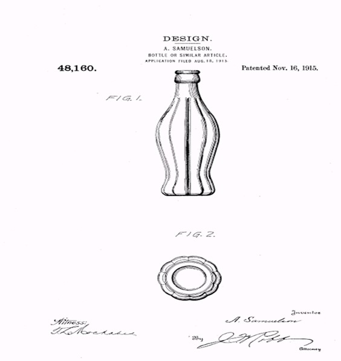

Tipos de coca cola y versiones.
con el pasar del tiempo y la rápida propagación de esta bebida, los empresarios se vieron en la obligación de poder crear nuevos modelos de envases con diferentes sabores para el paladar y gusto del cliente, tal es el caso que se crearon muchos nombres con la misma marca como son: Coca-Cola Lemon, Coca-Cola Vainilla, Coca-Cola C2, Coca-Cola with Lime, Coca-Cola Raspberry, Coca-Cola M5, Coca-Cola Black, Cherry Vainilla, Coca-Cola Blak Coca-Cola Citra, Coca-Cola Light Sango y muchas más. Dando un boom al inicio de esta gran marca que para poder competir y marcar la diferencia se vio obligado en desarrollar nuevas versiones, modelos y sabores, gustos al paladar y sabor del cliente para que de esta manera podría llegar a traspasar fronteras y sí que lo logró porque sin su variedad y sabor tal ves no hubiera alcanzado el sabor que lo caracteriza ahora dándole un toque mágico y que ahora en el mercado competitivo se puede apreciar la rápida acogida que llegó obtener por su estrategia de marketing y publicidad que ya lo veremos más adelante.
Como se sabe que esta bebida tiene una variedad de ingredientes, pues no solo era necesario el sabor, faltaba un toque mágico para poder atraer al público y así se pensó en la presentación de una mejor botella donde el público se sienta identificado con la bebida y que la gente donde este se pueda la pueda reconocer a una manera más competitiva y llamativa. Pasando por muchos modelos y nominaciones, se pensaron en varios modelos, uno de ellos y los más sonados fue la botella en forma de silueta de mujer que hasta ahora se conserva en las botellas de tamaño económico y que nos dan una idea de una mujer , y que esta tubo una acogida muy grande en ese tiempo más en la juventud varonil donde eran más los consumidores masculinos y se veían más atraídos por estos envases y que a su ves este fue alimentado por la fuerte publicidad en las calles de mujeres con hermosa figura alentando al sexo opuesto a su consumo y que después con el correr del tiempo fue entrando al sexo femenino terminando de explotar todos los ángulos del ser humano, en todas sus formas y nominaciones.
Un punto muy importante es el distintivo sabor a cola viene en su mayoría de la mezcla de azúcar y aceites de naranja, limón y vainilla. Ya que con el tiempo los ingredientes han cambiado donde unos de agregaban y otros de quitaron. Los otros ingredientes cambian el sabor tan sólo ligeramente. En algunos países, como Estados Unidos y Argentina, la Coca-Cola es endulzada con jarabe de maíz. En México y Europa, Coca-Cola sigue usando azúcar. Aunque recientemente se aprobó en México favor de permitir el uso de fructosa para endulzar las bebidas como Coca-Cola, debido a que es más barata, al mismo tiempo provocó una ola de protestas campesinas en todo México y varios ingenios cañeros del país emplazaron a huelga, estas medidas no evitaron que la legislación mexicana diera marcha atrás.

En principio la bebida era servida en recipientes pero luego de un tiempo cando esta fórmula ya había ganado fama y un poco de fortuna se firmó el primer acuerdo para embotellar Coca-Cola en todo el territorio estadounidense, que fue adjudicado en exclusiva a Benjamin F.Thomas y Joseph B. Whitehead, dos abogados de Tennessee. logrando con esta que se formaran varias embotelladoras en varios puntos estratégicos de EEUU, para dar inicio a la producción en masa y con esto poder dar trabajo a muchas personas y promover la industrialización a planos mayores.
Luego de dar inicio a la fabricación de fábricas, se pudo dar más oportunidades de trabajo a muchas personas que venían de diferentes partes y lugares. En un principio nada fue fácil ya que les costó mucho trabajo, dedicación, esfuerzo y perseverancia el seguir continuando en esos proyectos de plano mundial, claro que se presentaron muchas bajas, caídas de uno en otro momento pero al final de esto lo que más prevaleció fue la fortaleza de aquellos hombre que dieron todo por un fin común, el de ver crecer a una de las más grandes compañías del mundo como lo es ahora y bien ganado lo tiene.  Después de que se formalizara una de los modelos de La botella, esta comenzó a ser comercializada a inicios de 1916. Su forma estilizada y su color verde, consecuencia de la arena utilizada en el proceso de fabricación del vidrio, hacían de ella un recipiente distinto. El crecimiento exponencial de las ventas de Coca-Cola en todo el mundo hizo el resto. La convirtió en icono, objeto de colección y culto. Con el tiempo pasó a ser referencia de la cultura pop y, para bien o para mal, a identificarse de manera inmediata con el capitalismo y la sociedad de consumo.
Luego se incluyó más tarde en su colección permanente muchos más modelos y se pudo establecer el diseño gracias a la Root Glass Company demostró que, además, era adaptable a cambios en el material y el proceso de fabricación: desde la primera revisión profunda del diseño en 1955 para adaptarlo a una capacidad mayor hasta la transformación en botella de plástico en la década de 1990, en cualquier botella de Coca Cola se siguen reconociendo los trazos del diseño original.